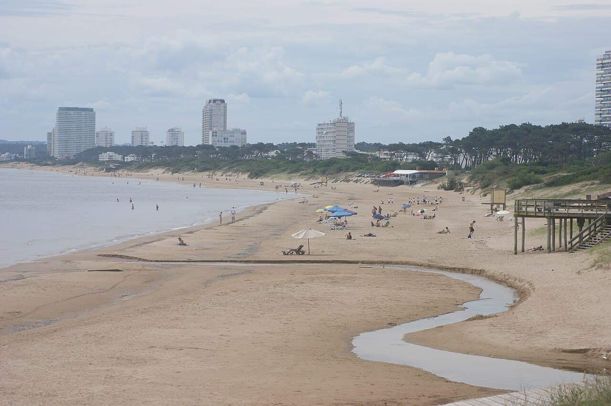

Punta del Este — La Barra
Uruguay · surf, bodyboard, baignade

La plage la plus surfée d’Uruguay, à la limite entre le Río de la Plata et l’Atlantique. L’eau change de couleur selon les vents, du brun fluvial au bleu océanique.
- Lieu
- Uruguay
- Niveau
- Intermédiaire
- Activités
- surf, bodyboard, baignade
- Type d'eau
- Mer / océan
- Coordonnées
- -34.94, -54.90 (position approximative du secteur)
Dangers à connaître
- Courants à l’embouchure de l’arroyo.
- Très fréquentée en janvier et février.
Le conseil d'Ocean Buddy
Après plusieurs jours de vent d’est, l’eau redevient claire et la vague se range.
Ouvrir dans Ocean Buddy Télécharger sur l'App Store
Source : Description historique Ocean Buddy · vérification externe en attente.